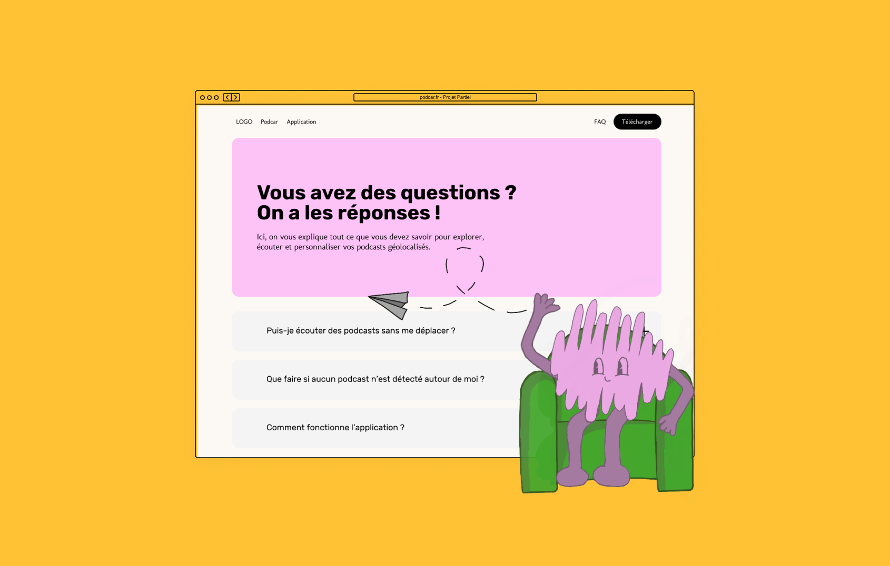
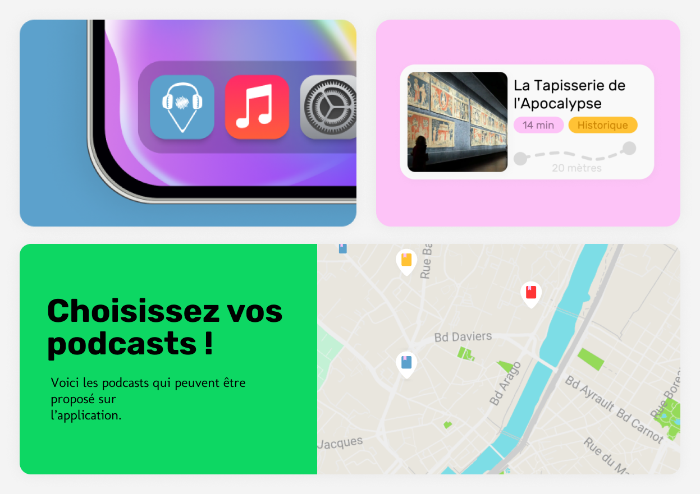
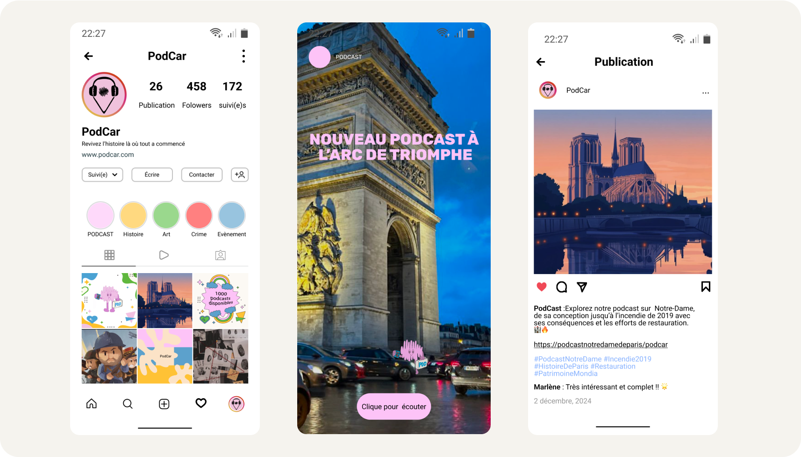

Contexte
Conçu dans le cadre d'un projet de partiel, ce travail consistait à imaginer, positionner et développer l'écosystème d’un service audio innovant. L’enjeu pédagogique était de lier une réflexion stratégique globale à une réalisation technique concrète, de prouver la viabilité commerciale du concept à travers une étude marketing solide, puis de donner vie au projet en développant son premier site web vitrine.
La véritable complexité résidait dans la promesse utilisateur : comment rendre l'audio contextuel et captivant ? Il ne s'agissait pas simplement de diffuser des podcasts, mais de créer une expérience immersive où le contenu éditorial s'adapte précisément à la position géographique, rendant la route ou la marche active et interactive.
- Étude Marketing
- Site Web
- Développement



La mission
En tant que projet pilier de validation, ma mission s'est articulée autour de deux axes majeurs. D'une part, j'ai piloté l'étude marketing afin de définir nos cibles (automobilistes, voyageurs, curieux urbains), d'analyser la concurrence des applications de streaming classiques et de structurer notre proposition de valeur unique. D'autre part, je me suis chargé du design de l'interface et du développement du site web du projet. Ce site avait pour but de présenter le concept de manière intuitive, de séduire nos futurs utilisateurs et de poser les bases techniques de la plateforme. Ce projet de partiel m'a permis de décloisonner mes compétences, en créant un pont direct entre la rigueur de l'analyse marketing et la créativité du développement front-end.
